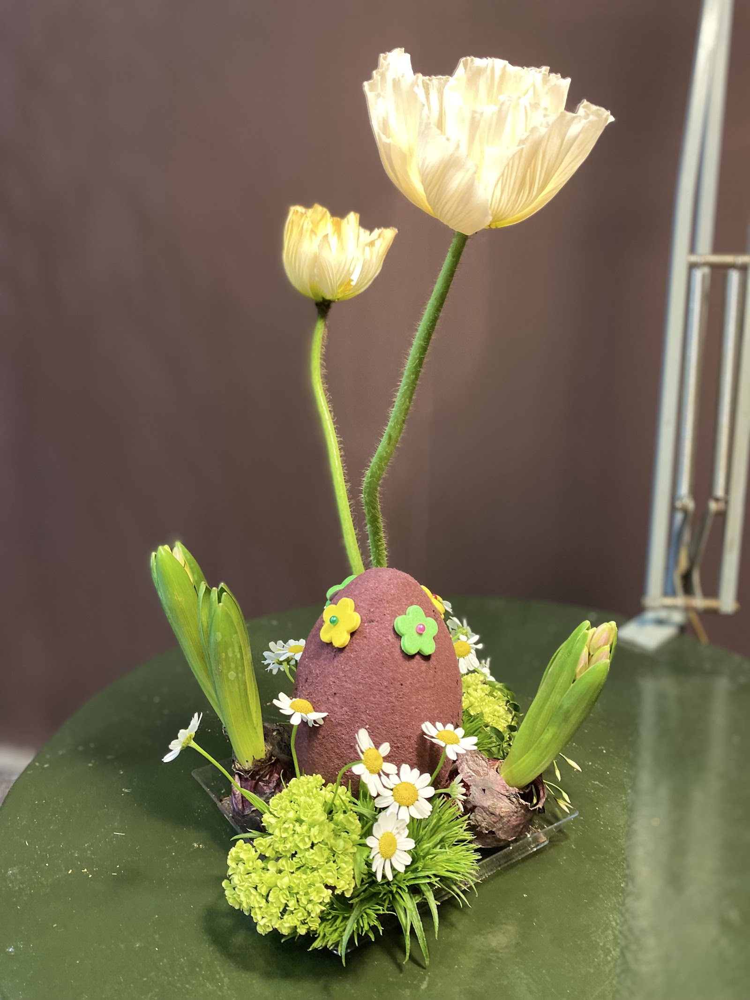
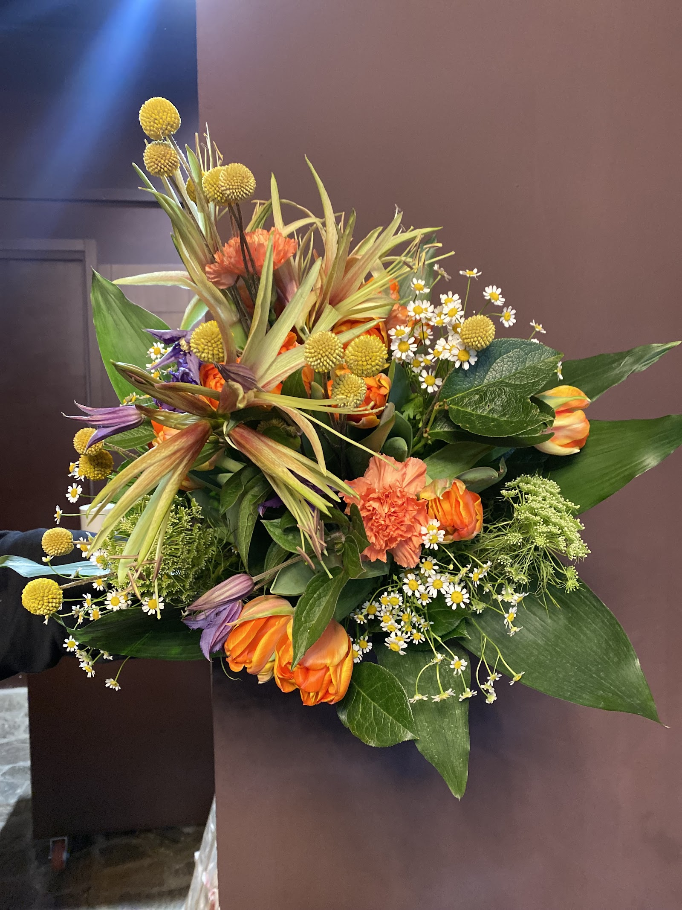
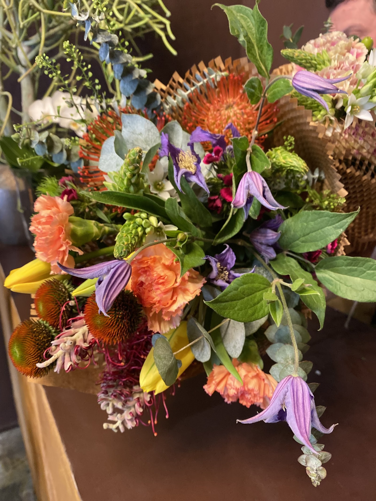
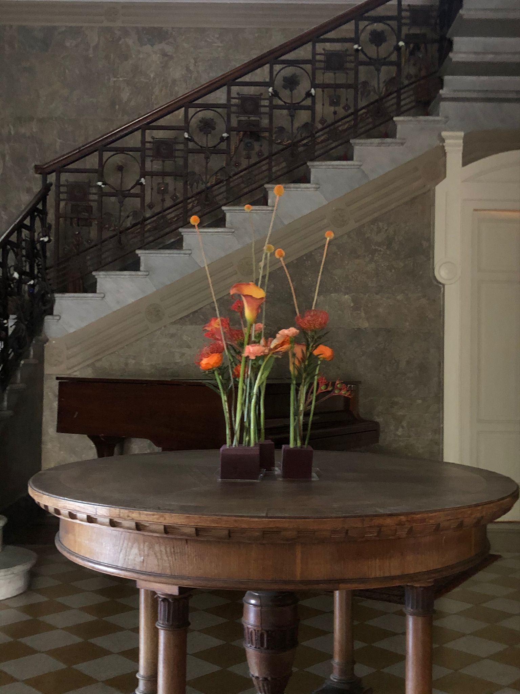
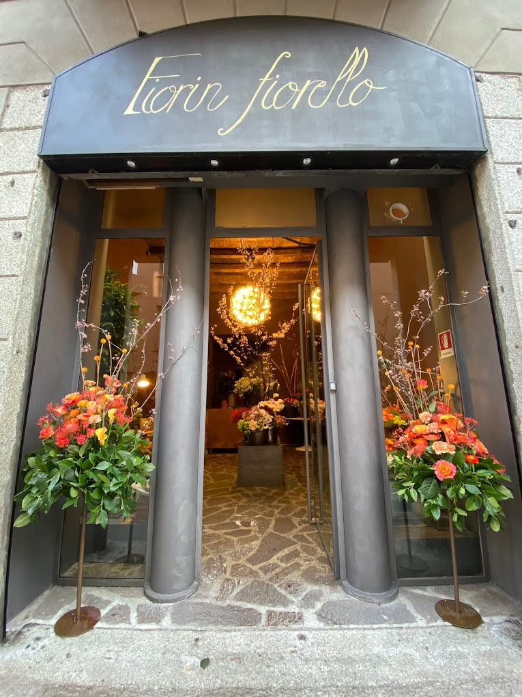
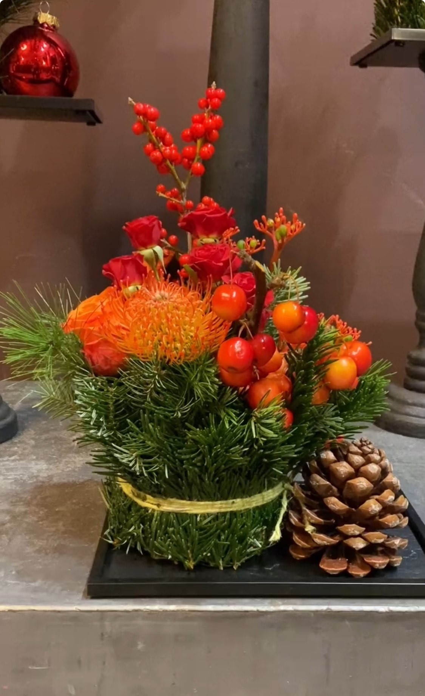

In questa stagione
01 Primavera
Il risveglio della natura: tulipani, ranuncoli e i primi profumi. Il momento delle rinascite.

Boutique floreale · Porta Vigentina, Milano
Fiori, composizioni e allestimenti che cambiano con la natura. Ricchi di poesia, unici nel loro genere.

Eventi & Allestimenti

La fioraia
La mia boutique, ricca di poesia e di amore, nasce dal desiderio di lavorare con i fiori. Le mie creazioni, uniche nel loro genere, sono eleganti e raffinate, frutto di abbinamenti ricercati.
Creativa ed entusiasta del mio lavoro, realizzo composizioni che si distinguono per la loro originalità e che rimangono nel ricordo di chi a me si affida.
Elisabetta Di Capua
Il nostro filo conduttore
Ogni stagione porta i suoi fiori, i suoi colori, il suo carattere. La boutique li segue, uno dopo l'altro.

Il risveglio della natura: tulipani, ranuncoli e i primi profumi. Il momento delle rinascite.
Un'esplosione di intensi colori e profumi. Bouquet pieni di luce, come le giornate più lunghe.
I colori caldi e un po' malinconici: ambra, ruggine, fogliame. La bellezza che rallenta.

Rallegrato dalle luci natalizie: abete, bacche rosse e composizioni delle feste.
Per ogni occasione
Le nostre
FuoriOrticola 2025 · Botteghe Storiche
«Dove il tempo si è fermato, ma la bellezza continua a fiorire»
La motivazione con cui Fiorin Fiorello è stata premiata tra le vetrine più belle di Milano.
Le parole dei clienti
Recensioni reali da Google.
Personale gentile e cortese che crea delle composizioni eleganti e di effetto. Ritorneremo sicuramente. Grazie!!
Bellissime composizioni, gentilezza e professionalità, da consigliare.
La proprietaria Elisabetta super gentile e disponibile.
Ottime idee per tutte le esigenze: compleanni, lauree, eventi.
Roberto è un artista e il miglior fiorista in circolazione.
Ordina
Raccontaci l'occasione: pensiamo noi al fiore giusto. Consegna a domicilio a Milano.
Oppure passa in boutique in Corso di Porta Vigentina 31.
Dove siamo
La mappa è di Google: aprendola, Google riceve il tuo indirizzo IP e può usare i suoi cookie.
Domande
Sì, consegniamo bouquet e composizioni a domicilio a Milano. Contattaci per concordare zona e orario.
Sì, creiamo allestimenti su misura per matrimoni, eventi e occasioni speciali, curati nei minimi dettagli.
Puoi chiamarci, scriverci su Instagram @fiorinfiorello_milano o passare in boutique in Corso di Porta Vigentina 31.
Sì. Ci lasciamo ispirare dai fiori del momento: ogni stagione porta colori e profumi diversi.